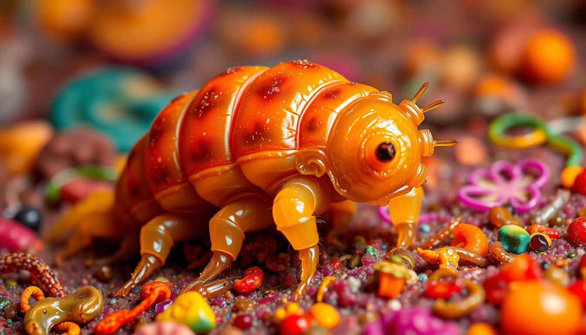

What Are Tardigrades? Exploring Nature's Toughest Survivors
Tardigrades have been on Earth for over 540 million years. Their ability to survive in extreme conditions has amazed many. They can live in Antarctica's cold and Yellowstone's hot springs.
These tiny creatures are often called water bears because of their bear-like look. They are found in water all over the world.
The Tardigrade, or water bears, can survive in extreme conditions. This has caught the attention of scientists and the public. They can live in places like Antarctica's cold and Yellowstone's hot springs
Key Takeaways
- Tardigrades are microscopic creatures that can survive in extreme conditions.
- They are also known as water bears due to their bear-like appearance.
- Tardigrades have been on Earth for over 540 million years.
- They can be found in almost every environment on the planet.
- Tardigrades are incredibly resilient and can survive in a variety of water environments
- Their ability to survive in extreme conditions has fascinated scientists and the general public alike.
What Makes Tardigrades Unique
Tardigrades, also known as water bears, have unique features that make them stand out. Their unique body shape and structure help them survive in extreme conditions. They can handle freezing temperatures and extreme heat.
- Eight legs and claws, which enable them to crawl, swim, and even walk on water
- A plump body that helps them to withstand extreme pressures and temperatures
- A unique set of genes that allow them to survive in extreme conditions, which is a result of water bear evolution
Understanding tardigrades' physical traits and evolution is key. It helps scientists understand how they can survive in so many environments. By studying tardigrades, we learn about their adaptations over time.
Tardigrades are among the most resilient animals on Earth. Their unique traits make them fascinating for scientists. By studying these creatures, we can appreciate the natural world and its diversity more.
| Characteristics | Description |
|---|---|
| Size | 0.1-1.5 millimeters in length |
| Body shape | Plump, with eight legs and claws | Evolutionary history | Result of water bear evolution, with adaptations for extreme environments |
The Remarkable Anatomy of Water Bears
- Eight legs with claws for grasping and crawling
- A unique body structure that allows for flexibility and movement
- A specialized fluid that helps to protect them from dehydration
- Freshwater lakes and rivers
- Moist soil and moss
- Marine environments, such as oceans and saltwater lakes
- Terrestrial environments, such as forests and deserts
- Feeding on algae and bacteria in water
- Consuming plant cells and other organic matter
- Using specialized enzymes to break down and digest food
- Understanding their extreme survival abilities
- Exploring their potential in medicine and technology
- Studying their role in ecosystems and how environmental changes affect them
- Development of new technologies that can withstand extreme conditions
- Creation of medical treatments that can protect against radiation and other forms of damage
- Design of environmental monitoring tools that can detect changes in ecosystems
The Remarkable Anatomy of Water Bears
The Tardigrade anatomy is truly fascinating. These tiny creatures have a unique body structure. It lets them survive in extreme environments. Their eight legs, each with claws, help them grasp and crawl.
Their plump bodies are filled with a special fluid. This fluid protects them from dehydration.
Some key features of Tardigrade anatomy include:
The water bear physiology is also adapted for survival in extreme conditions. They can enter a state of dormancy called cryptobiosis. This lets them withstand extreme temperatures, radiation, and dehydration. Understanding the Tardigrade anatomy and water bear physiology can provide valuable insights into the survival mechanisms of these incredible creatures.
By studying Tardigrade anatomy and water bear physiology, scientists learn a lot. They understand how these creatures thrive in many environments. This knowledge can also help in medicine and technology, leading to new solutions and innovations.
Extreme Survival Abilities of Tardigrades
Tardigrades amaze scientists with their incredible survival skills. They can live in extreme conditions that kill most other creatures. Their survival tricks are truly remarkable.
They can dry out and then come back to life. They also handle extreme temperatures and radiation well. This makes them one of the most resilient animals around
Extreme Survival Abilities of Tardigrades
Tardigrades amaze scientists with their incredible survival skills. They can live in extreme conditions that kill most other creatures. Their survival tricks are truly remarkable.
They can dry out and then come back to life. They also handle extreme temperatures and radiation well. This makes them one of the most resilient animals around.
Surviving in Space
Tardigrades can even survive in space's vacuum. Temperatures there range from -270 to 120 degrees Celsius. Their ability to adapt to such harsh conditions is amazing.
Temperature Resistance
They can handle extreme temperatures too. From Antarctica's cold to Yellowstone's hot springs, they thrive. Their temperature tolerance is a key survival skill.
Radiation Tolerance
Tardigrades are also very resistant to radiation. This makes them one of the most radiation-tolerant animals on Earth.
Dehydration Survival
One of the most impressive tardigrade skills is drying out and rehydrating. This lets them survive in places with little water. Their adaptability to different environments is unmatched.
Natural Habitats Around the Globe
Tardigrades live almost everywhere, from the Arctic's frozen tundra to the Sahara's hot deserts. They are found in diverse Tardigrade habitats. This includes freshwater lakes, rivers, and oceans, as well as moss, lichen, and soil on land.
Some of the most common water bear environments include:

Tardigrades are key in many ecosystems. They are food for other animals and help break down organic matter. It's vital to protect their habitats. This ensures the survival of these amazing creatures for a long time.
Diet and Feeding Habits
Tardigrades, also known as water bears, have a unique tardigrade diet. They eat algae, bacteria, and plant cells. They are detritivores, which means they feed on dead and decaying organic matter. Their water bear feeding habits are fascinating, as they use their claws and legs to capture and manipulate their food.
Some of the key aspects of their diet include:
Tardigrades have adapted to survive on limited nutrients. Their tardigrade diet is crucial for their survival in extreme environments. By understanding their water bear feeding habits, we can learn about their remarkable survival abilities.
Their metabolic adaptations, such as the ability to enter a state of dormancy called cryptobiosis, allow them to conserve energy. This helps them survive in environments with limited food availability. This unique adaptation is a key aspect of their water bear feeding habits and enables them to thrive in a wide range of environments.
| Food Source | Description |
|---|---|
| Algae | Primary source of nutrition for tardigrades |
| Bacteria | Important component of their diet, providing essential nutrients |
| Plant Cells | Consumed as a source of energy and nutrients |
Reproduction and Life Cycle
Tardigrade reproduction is truly fascinating. It's a key part of their ability to survive. They lay eggs that hatch into tiny versions of themselves. This helps them quickly adapt to new environments and ensures their survival.
Some key areas in tardigrade research include:
These studies have big implications for fields like medicine and materials science. By learning how tardigrades survive extreme conditions, scientists can create new treatments and materials. Tardigrade research is quickly growing, with water bear science leading the way.
As we learn more about tardigrades, we'll see even more exciting breakthroughs. With more research and investment, we might find new ways to apply their survival secrets to solve real-world problems
Human Applications of Tardigrade Biology
The study of tardigrades has led to many Tardigrade applications that help society. One key area is using water bear technology to make crops and other organisms more resilient.
Some of the potential Tardigrade applications include:
Researchers are also looking into water bear technology for new materials and products. For instance, scientists are studying tardigrade proteins to make better insulation and protective coatings.

The study of tardigrades and the development of Tardigrade applications and water bear technology could change many fields. It could also make our daily lives better.
| Application | Description |
|---|---|
| Biotechnology | Development of new technologies that can withstand extreme conditions |
| Medicine | Creation of medical treatments that can protect against radiation and other forms of damage |
| Environmental Monitoring | Design of environmental monitoring tools that can detect changes in ecosystems |
Conclusion: Why Tardigrades Matter for Our Future
Tardigrades, or "water bears," are truly remarkable. They teach us about life's resilience and adaptability. These tiny creatures have fascinated scientists and the public. Their ability to survive in extreme conditions shows us life's limits and the potential for space exploration.
Tardigrades also have real-world benefits for us. Their unique traits, like resistance to radiation and dehydration, could lead to big breakthroughs. These could change medicine, agriculture, and materials science. As we learn more about tardigrades, we might unlock new innovations.
natural world's complex connections. This understanding inspires us to protect our planet for future generations. The lessons from tardigrades could help us build a more sustainable world.
FAQ
What is a tardigrade?
Tardigrades, also called water bears, are tiny creatures found in water worldwide. They are famous for their amazing ability to survive in harsh conditions.
What makes tardigrades unique?
Tardigrades have eight legs, claws, and a round body. They've adapted to live in many environments over millions of years.
How can tardigrades survive in such extreme environments?
Tardigrades can handle extreme temperatures, radiation, and even space. They can also go into a state of dormancy called cryptobiosis to survive dehydration and other stresses.
Where can tardigrades be found in nature?
You can find tardigrades in freshwater and oceans, as well as in moss, lichen, and soil. They live in almost every ecosystem, from the Arctic to the Sahara.
What do tardigrades eat, and how do they feed?
Tardigrades eat dead and decaying matter. They use their claws and legs to catch food and have special enzymes to digest it.
How do tardigrades reproduce and go through their life cycle?
Tardigrades lay eggs that hatch into tiny versions of themselves. They can reproduce without fertilization or through hermaphroditism, having both male and female organs.
What are some of the recent scientific discoveries and potential applications of tardigrade biology?
Scientists have found new tardigrade species and developed new ways to study them. Their resilience and unique biology inspire new treatments, materials, and environmental tools
Why are tardigrades important for our future?
Tardigrades are not just interesting creatures. They help us understand life on Earth and beyond. Studying them can lead to new discoveries and innovations for a sustainable future.
.